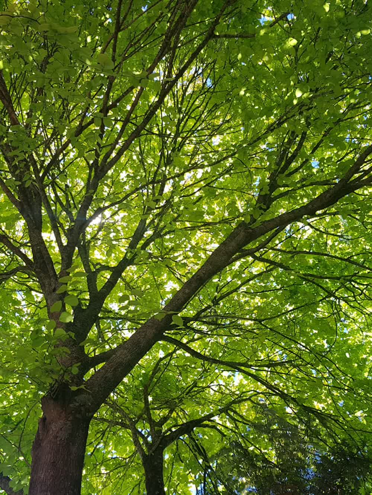
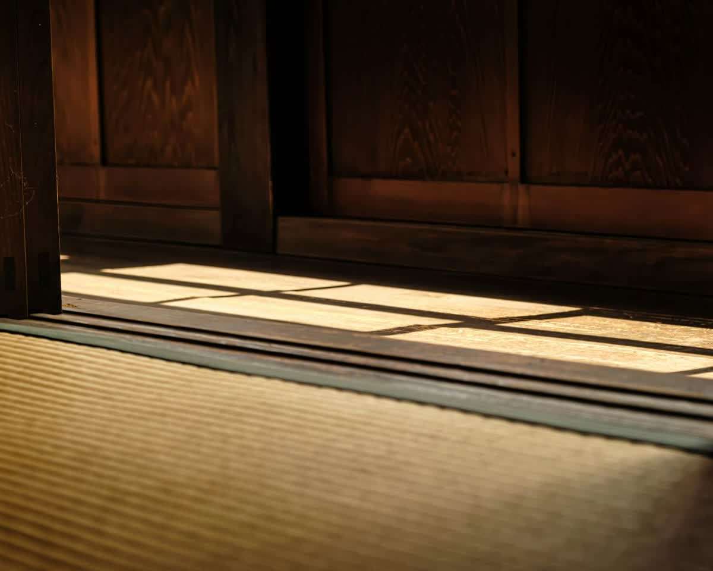
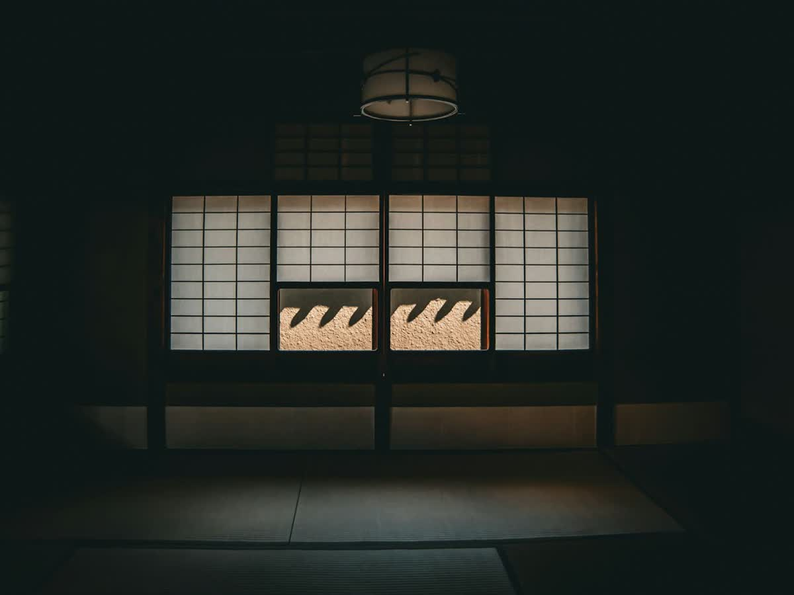
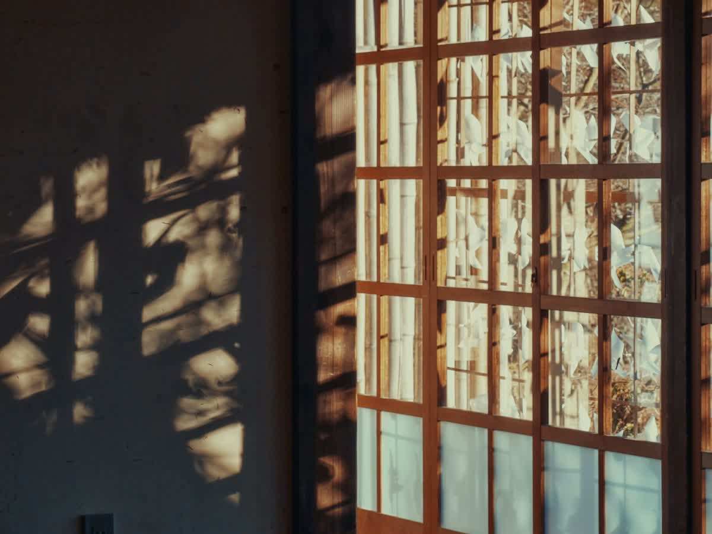

FUJIMI · FUJIMINO · MIYOSHI
けやき
訪問看護ステーション
富士見市・ふじみ野市・三芳町へ、看護師がお伺いします。ご病気やお身体の不自由があっても、住み慣れたお家で暮らし続けられるように、療養生活を支えます。

- ご相談・お電話
- 049-270-9070
- 事業所の受付
- 8:30〜17:30
日曜と12月31日〜1月3日はお休みです
- 訪問の時間
- 9:00〜17:00
時間外のご訪問はお電話でご相談ください
- お伺いする地域
- 富士見市／ふじみ野市／三芳町
MEDICAL CARE
お受けできる医療的ケア
当事業所がお受けできる処置と、お受けできない処置の一覧です。
出典は埼玉県の介護サービス情報公表システムの公表内容（2026年8月時点）です。
- 01吸引
- 02経管栄養法（胃ろうを含む）
- 03在宅中心静脈栄養法（ＩＶＨ）
- 04点滴・静脈注射
- 05膀胱留置カテーテル
- 06腎ろう・膀胱ろう
- 07人工肛門（ストマ）
- 08気管カニューレ
- 09在宅酸素療法（ＨＯＴ）
- 10麻薬を用いた疼痛管理
- 11人工呼吸療法（レスピレーター・ベンチレーター）
- 12在宅自己腹膜灌流（ＣＡＰＤ）
- 13人工膀胱
ここに載っていない処置や、×の項目についても、まずはお電話でお聞かせください。
電話でご相談する 049-270-9070CONSULTATION
ご相談いただけること
当事業所がご利用者様とご家族に向けてご説明している内容です。
- 訪問看護の制度について
- 創傷処置および処置材について
- 看護師が行える関節可動域訓練について
- がん性疼痛に対する麻薬について
- ストマケアについて
はじめてのご相談は、お電話でかまいません。訪問看護をお使いになったことがなくても、どうぞそのままお話しください。
キャンセル料はいただいておりません。

24 HOURS
夜間と緊急時のこと
地域に密着し、24時間365日ご利用者およびそのご家族が安心して日常生活を営むことができるよう支援します。
介護サービス情報公表システムに当事業所が記載している「事業所の特色」より
- 24時間の電話相談にお応えしています
- 急に容体が変わったときのご訪問にお応えしています
- 夜間・早朝の訪問、深夜の訪問について加算を届け出ています
- 緊急時訪問看護加算（Ⅰ）を届け出ています

COOPERATION
関係機関との連携
関係市町村、地域の保健・医療・福祉サービスとの連携を図り、総合的なサービスの提供に努めるものとする。
サービスの提供にあたっては、利用者又はその家族に対し、サービスの提供方法等について理解しやすいよう説明することに努め、サービスの終了に際しては、利用者又はその家族に対し、適切な指導を行うとともに、居宅介護支援事業者へ情報の提供を行うものとする。
運営方針（介護サービス情報公表システム）より
- 退院時共同指導加算を届け出ています
- 特別管理加算（Ⅰ）（Ⅱ）を届け出ています
- ターミナルケア加算を届け出ています
- 生活保護法第54条の2に規定する介護機関の指定を受けています
WORK WITH US
看護師としてはたらく方へ
看護師の体制です。
5看護師の人数常勤3名・非常勤2名
3.2看護職員の常勤換算
3お伺いする市町富士見市・ふじみ野市・三芳町

訪問の時間は9:00〜17:00、事業所の受付は8:30〜17:30です。日曜と年末年始はお休みです。従業者の健康診断を実施しています。
はたらくことにご関心のある方も、同じ番号にお電話ください。
電話をかける 049-270-9070OFFICE
事業所のご案内
| 事業所名 | けやき訪問看護ステーション |
|---|---|
| 運営法人 | 株式会社サウレケア |
| 代表者 | 深井 亜季子 |
| 管理者 | 佐藤 典子 |
| 所在地 | 〒354-0033 埼玉県富士見市羽沢2-16-7 |
| 電話／FAX | 049-270-9070 ／ 049-215-9786 |
| 事業所の営業時間 | 8:30〜17:30（平日・土曜・祝日） |
| 訪問看護の実施時間 | 9:00〜17:00（平日・土曜・祝日） |
| 休業日 | 日曜／12月31日〜1月3日 |
| お伺いする地域 | 富士見市／ふじみ野市／三芳町 実施地域を1km超えてお伺いする場合は、交通費として50円をいただいております。 |
| 事業開始 | 2024年5月1日 |
| 事業所番号 | 1162990182 |
| アクセス | 鶴瀬駅より徒歩15分 ライフバス「松本接骨院」下車 徒歩30秒 |